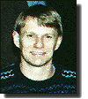
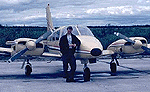
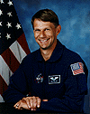
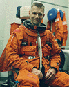
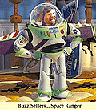

Live images of Astronaut Neil Armstrong stepping onto the moon, beamed to the Earth, set the course of a young British boy's life. Today, he prepares to enter that same Astronaut Corps.
 "I was mesmerized by the experience of watching Armstrong walk on the moon and I knew then that I wanted to someday travel to space myself," said Piers Sellers, a member of NASA's newest astronaut class and a scientist in the Laboratory for Terrestrial Physics at Goddard [Space Flight Center]. Sellers reports to the Johnson Space Center in Houston in August [1996].
"I was mesmerized by the experience of watching Armstrong walk on the moon and I knew then that I wanted to someday travel to space myself," said Piers Sellers, a member of NASA's newest astronaut class and a scientist in the Laboratory for Terrestrial Physics at Goddard [Space Flight Center]. Sellers reports to the Johnson Space Center in Houston in August [1996].
It's common to hear American astronauts credit the historic Apollo missions as the inspiration for their dreams. One forgets, however, that many people around the world were inspired by America's achievements and also dreamed of going into space.
Sellers was born in southern England and raised around the world while his father filled assignments to British army posts in Cyprus, Malta, the Middle East, and Europe. During those years, Sellers developed a love of flying while being trained by the Royal Air Force at school. The stark reality of a 16-year commitment to the Royal Air Force to pursue a fast jet flying career prevented him from signing on the dotted line for a commission. During those years, he also earned a degree in ecology and a Ph. D in bio-meteorology. With the degrees in hand, pilot experience and one year serving as a software consultant in London, Sellers and his wife left England in 1982 and came to Maryland where he had been recruited by Goddard's Yale Mintz.
"Yale knew of my work in England and he was looking for people to do climate modeling and so we came into contact with each other. My wife and I arrived in the U.S. for the first time with $60 in our pockets and three suit cases and I started work at Goddard two days later."
Beginning in 1984, Sellers began applying to the astronaut corps. The biggest obstacle was his lack of citizenship. He was finally naturalized in 1991. Still, he persisted in completing the paperwork each year if, for nothing else than to keep his name before the selection board. By 1995, Sellers had already been down to Houston one year for the astronaut interviews, but this year was different.
"I could sense that things were more serious this time around. I was more apprehensive, what with nearly a week of medical tests combined with an intensive 40-minute interview with a panel that consisted of former astronaut John Young and some current astronauts," Sellers said. One hundred and twenty individuals interviewed for 35 slots, but Sellers knew the Corps was seriously interested when a representative of the Office of Personnel Management interviewed him here. "They checked out friends, neighbors and relatives."
An announcement had been expected in March, April rolled around with no news. In late April, Sellers departed for a trip to Canada to perform studies in the BOREAS experiment, flying an instrumented aircraft among other things [like being Project Scientist]. During his return trip, he was transferring planes in the Minneapolis Airport when the public address announcer broadcast a phone call waiting for Sellers. He had been told previously that if the call came from anyone other than the Chief of Astronauts, Bob Cabana, he would know he had failed to make the selection. Thus, when the call came, it was from another individual at Johnson, not Cabana.
"My heart sank and as I walked to the phone I began thinking what I would say, preparing myself for the disappointment." However, upon taking the phone, the caller asked Sellers to hold for Bob Cabana . . . and the rest is history. "I went from great disappointment to exhilaration in an instant," Sellers explained.
After reporting in August, Sellers will spend his first year in Houston in training. Toward the end of that period, Sellers will be assigned to a specialty area in which he will undergo at least another year of technical training in preparation for an assignment to a Space Shuttle mission.
Sellers enters astronaut training in a particularly exciting time when the Corps is preparing for the momentous Space Station construction as well as service aboard the Russian space station Mir. NASA will be as busy as it has ever been in space during this period and Sellers figures to be in the middle of it.
April 1998 -- Astronaut Candidate Piers Sellers has completed his training and is preparing for his graduation to full astronaut status at the end of this month. Rumor has it that he will be getting his first flight assignment on the Space Shuttle some time in 1999. But with the delays in the construction missions for the International Space Station, he may get his chance to fly into space on an ealier science mission. We all wish him the best of luck.
|  |   |  |
| From Piers Sellers, mild-mannered scientist, to... |
Astronaut Candidate Sellers, to... | Buzz Sellers... Space Ranger "To infinity (well Houston anyway), and beyond..." |

{kind=link}
{kind=link}
{kind=link}
{kind=link}